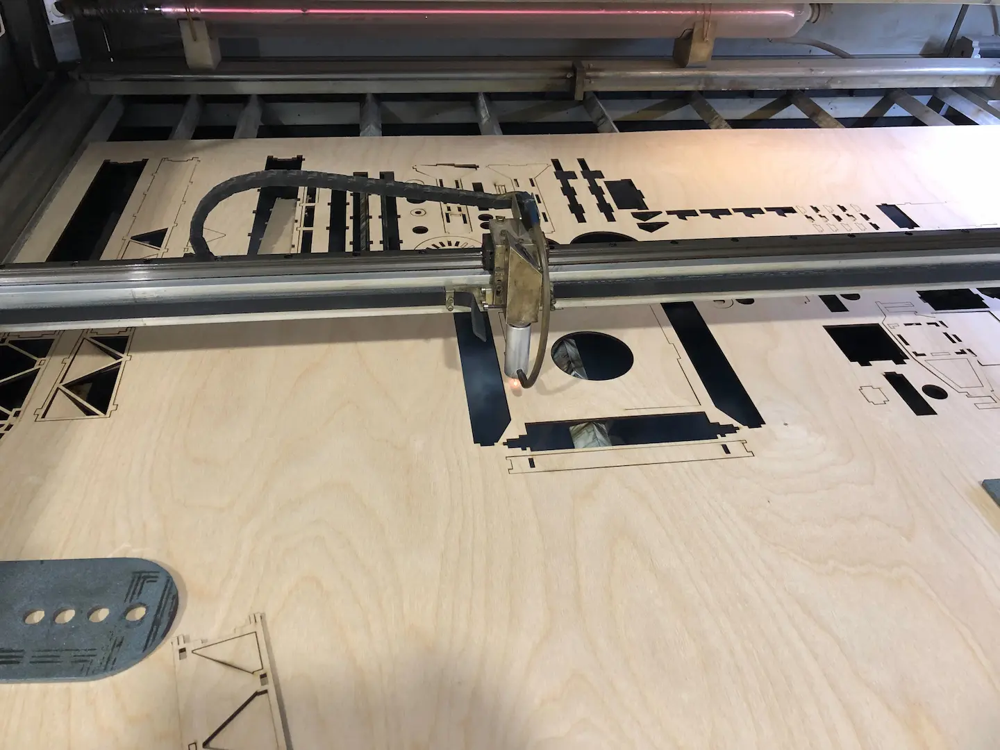
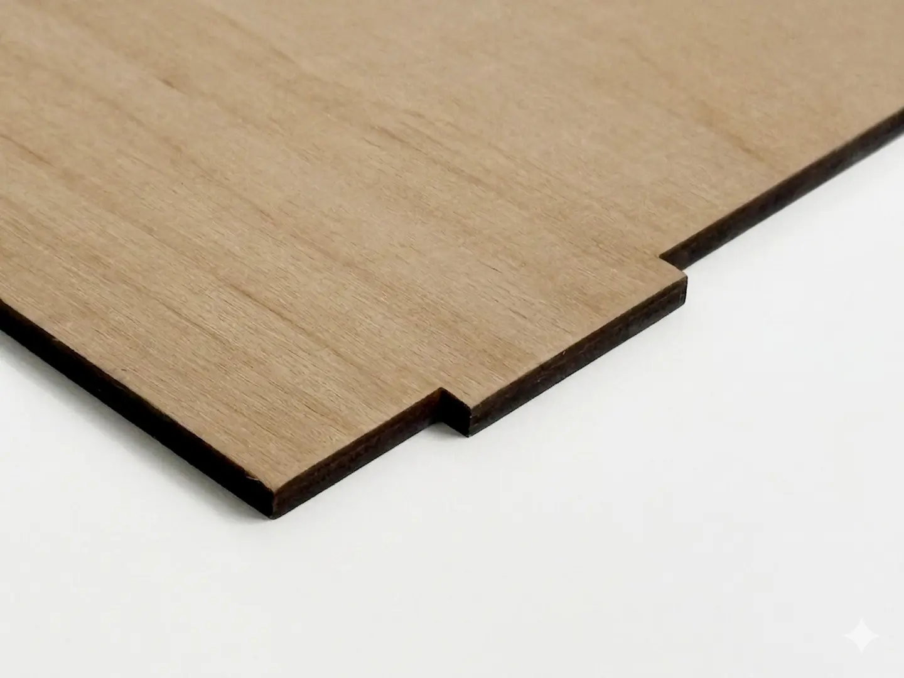

Лазерна різка фанери, МДФ та ДВП в Києві — власне виробництво
Потрібен якісний розкрій фанери лазером для меблів, декору або виробів? Ми пропонуємо професійну лазерну різку фанери, МДФ та ДВП на сучасному CO2-лазері 1500×1000 мм. Приймаємо замовлення від 1 деталі — швидко, точно, без задирок.
Наші послуги затребувані серед дизайнерів інтер'єру, меблевих майстерень, рекламних агентств, майстрів handmade та всіх, хто потребує точного розкрою деревних матеріалів невеликими або великими тиражами. Підбираємо режим різання індивідуально під кожен матеріал та завдання.

Скільки коштує лазерна різка фанери — прайс 2025
| Товщина | до 100 м.п. | від 100 м.п. |
|---|---|---|
| 4 мм | 12,00 грн/мп | 10,00 грн/мп |
| 5 мм | 15,00 грн/мп | 12,50 грн/мп |
| 6 мм | 18,00 грн/мп | 15,00 грн/мп |
| 8 мм | 24,00 грн/мп | 20,00 грн/мп |
| 10 мм | 30,00 грн/мп | 25,00 грн/мп |
Мінімальне замовлення — від 500 грн. Термінове виконання — +30% до вартості.
Чому замовляють лазерну різку фанери у нас
- Велике робоче поле 1500×1000 мм — обробляємо листи будь-якої складності
- Ідеально рівний край — без задирок, не потребує додаткової обробки
- Точність до 0,1 мм — деталі повністю ідентичні одна одній
- Різка без обвуглювання — завдяки системі охолодження, ніякого потемніння країв
- Робота зі своїм матеріалом — можете привезти власну фанеру або купити у нас
- Досвід з 1996 року — понад 25 років на ринку лазерної обробки матеріалів

/>Які матеріали ми ріжемо лазером
Фанера ФК
Найпопулярніший матеріал для декору, меблів та сувенірів. Ріжемо від 3 до 10 мм. Хвойні породи обробляються найкраще — дають рівний, практично білий зріз без потемніння. Важливо, щоб фанера була сухою (вологість до 12%) та без великих сучків у зоні різання — це безпосередньо впливає на якість краю та швидкість обробки.
МДФ
Ідеальний для фігурного вирізання, фрезерних робіт та лазерного гравіювання. Щільна однорідна структура МДФ дає абсолютно чистий різ без розшаровування — навіть на дрібних деталях. Оптимальна товщина для різки — від 3 до 8 мм. МДФ добре піддається подальшому фарбуванню та лакуванню.
ДВП (дрібнодисперсна плита)
Економічний варіант для тиражних виробів, упаковки та тимчасових конструкцій. ДВП ріжеться швидко, що знижує вартість замовлення. Підходить для шаблонів, трафаретів, а також легких декоративних елементів, де не потрібна висока механічна міцність.
Деревина, тканини, картон
Також виконуємо різку натурального дерева, текстилю та картону для макетів. Лазер легко впорається з фанерою з берези, липи або тополі. Окрім деревних матеріалів, ми пропонуємо лазерну різку акрилу та різку тканини — уточнюйте при замовленні.
Лазер vs фреза — коли що обирати?
Лазерна різка виграє у точності та швидкості для тонких матеріалів (до 10 мм), особливо при складних контурах та тиражному виробництві. Фреза доцільніша для товстих плит та об'ємної вибірки. Якщо сумніваєтесь — проконсультуємо безкоштовно.
Що виготовляють з лазерного різання фанери
 Меблі та декор
Меблі та декор
Коробки, полиці, підставки, органайзери, настінні панно
 Сувеніри та подарунки
Сувеніри та подарунки
Корпоративні логотипи, макети будинків, іменні вироби
 Для бізнесу
Для бізнесу
Вивіски, таблички, POS-матеріали, упаковка для товарів
 Моделювання
Моделювання
Деталі для макетів, архітектурні моделі, конструктори

Як замовити лазерний розкрій фанери — 5 кроків
- Надішліть макет у форматі CDR, AI, DXF, SVG або PDF. Макет має бути у міліметрах, без заливок, з замкненими контурами.
- Отримайте розрахунок — вартість залежить від довжини різання та товщини матеріалу.
- Погодьте деталі — матеріал (свій/наш), терміни, спосіб отримання.
- Ми виконуємо роботу — зазвичай 1–3 робочі дні, терміново — за 24 години.
- Отримайте замовлення — самовивіз у Києві (вул. Гетьмана Данила Апостола, 6) або доставка Новою Поштою.
Немає готового макета? Подивіться вимоги до макету або надішліть ескіз — допоможемо підготувати!
Часті запитання про лазерну різку фанери
Яка мінімальна сума замовлення?
Мінімальне замовлення — 100 грн. Можна замовити навіть одну дрібну деталь.
Чи можна різати свою фанеру?
Так, звичайно. Привозьте свій матеріал — ми його оглянемо та підберемо оптимальний режим різання.
Які товщини доступні?
Ріжемо фанеру від 3 до 10 мм. Найпопулярніші — 3, 4 та 6 мм.
Чи буде обвуглювання?
Ні, наше обладнання має систему охолодження, що запобігає обвуглюванню країв.
Скільки часу займає виготовлення?
Стандартне замовлення — 1-3 робочі дні. Термінове — виконаємо за 24 години (доплата +30%).
Яка точність різання?
Точність до 0,1 мм. Край чистий, гладкий, не потребує додаткової обробки.
Як підготувати макет для лазерної різки?
Файл має бути векторним (CDR, AI, DXF, SVG або PDF). Контури замкнені, без заливок, товщина лінії різання — 0,01 мм. Розміри — у міліметрах. Детальні вимоги — на сторінці вимог до макету.
Телефон: 050 462 50 83
Viber: +38 050 462 50 83
Telegram: @PromPostach
Email: info@snab.kiev.ua
Адреса: м. Київ, вул. Гетьмана Данила Апостола, 6
Графік: Пн-Пт, 8:30 — 17:00
Промпостач — точне різання фанери в Києві з 1996 року!